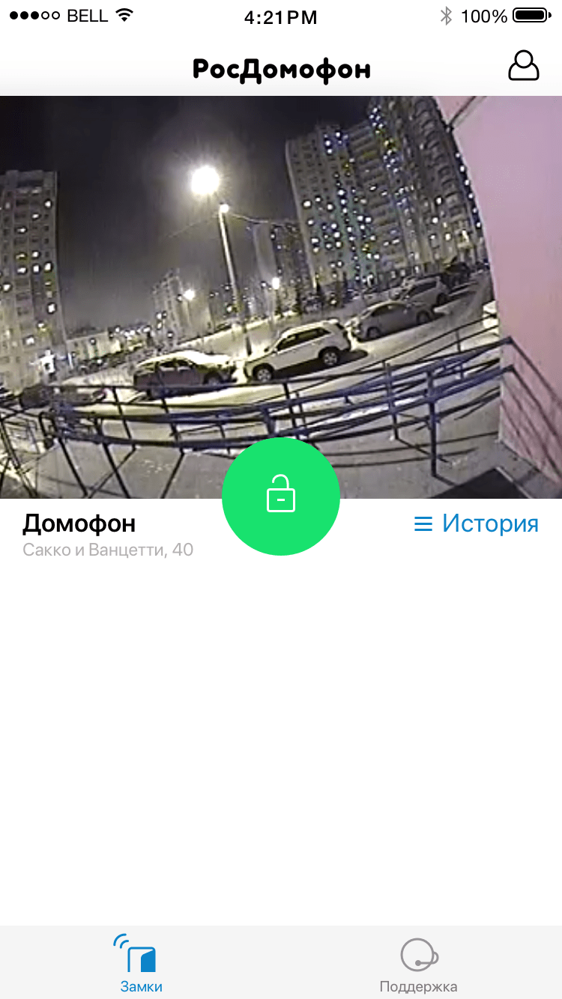

Итак, начну с обрамления камеры в некий блок. Я попробовал сделать «рамочку» для камеры и эта идея мне не понравилась, и вот почему.
Посомтри как выглядел инстаграмм лет 7 назад, когда еще был модный скеоморфизм:

А как он выглядит сейчас. Понимаешь разницу? :-)

У рамочки есть недостаток: когда камера одна (а обычно так и будет), то эта рамочка выглядит глупо. Я понимаю, что ее можно сделать более изящно, выдрачить каждый пиксель, но она не станет от этого менее странной. Да и пиксели она съедает, это будет хорошо заметно на маленьких телефонах.

Вот новое решение, которое учитывает твои пожелания. А именно, сразу видно, к чему относятся управляющие элементы за счет того, как кнопка «цепляется» за фотку. Замочек теперь такой же, как на экране входящего звонка.
Убрал акцент с названия камеры. Все-таки, это не новостной заголовок и надпись всегда будет одна и та же. Более того, в теории его можно убрать и ничего не изменится, потому что по картинке все ясно.
Опять же, такая расстановка требует меньше места на экране. Да и просто более современно выглядит, а-ля матеирал-дизайн.


Теперь давай разберем историю.
Я честным образом хотел сделать дату сверху, а «открытие» снизу и наоборот, но каждый раз это превращалось в фигню.
Как ни разделяй два блока друг от друга, к фотке будет «прилипать» чужая дата. И не нужно смотреть на инстаграмм, там все логично: начинается фото с красивой аватарки автора, а заканчивается перепиской из каментов. По автору часто понятно, пропускать незагруженное еще фото или остаться ненадолго.
На этом моменте, кстати, я бы попросил перестать сравнивать наше приложение с истаграммом :-) Вот когда в Сибири начнут пальмы расти, как на Бали, тогда и фотки будут красивые. Тогда и приложение сразу будет иначе выглядеть. А пока что, я пытаюсь сделать «как у них» и это заранее провальное сравнение.
Не будет как в инстаграме, будет хуже всегда.

Немного прилизанная версия прошлой истории.
